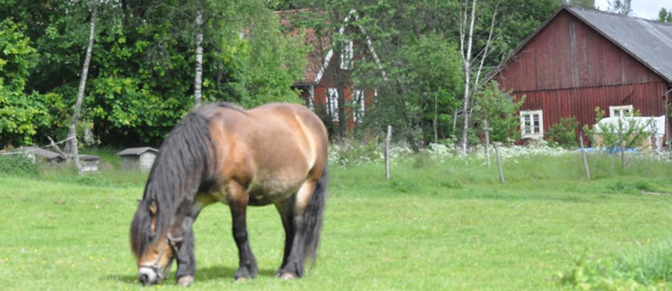

Övraryds gård ligger i Snapphanebygden i norra Skåne och brukas av Siv och Ingvar Nilsson. Vi har efterhand utvecklat gårdens verksamhet sedan vi 1990 skaffade våra första lantrasdjur: några ryafår. Sedan 1995 har vi också haft rödkullor, som är en gammal svensk lantrasko. Hos oss kan man köpa lådor med hängmörat kött från våra rödkullor och lådor med lammkött från våra ryafår. I båda fallen är köttet styckat och färdigt att packa och frysa in. Hos oss kan man också köpa tvättbara lammskinn och även ull om man vill prova på att tova eller spinna. Du hittar mera information om detta under fliken Produkter. Vi säljer också livdjur av våra lantraser. Vi försöker bidraga till ett långsiktigt hållbart jordbruk och har därför både ekologisk växtodling och ekologisk djurhållning. För närvarande är det EU-ekologisk produktion certifierad av SMAK.
Vi köpte våra två första rödkullor 1995. Det var två kvigor som var födda 1993. De första åren hade vi semin, men det var litet besvärligt att få det att fungera då vi båda jobbade borta. Sedan dess har vi haft egen tjur som vi köpt från andra rödkullebesättningar. Vi har som regel haft varje tjur 2 – 3 år innan har fått gå till slakt och vi skaffat en ny. Vi köpte ytterligare en kviga 1999, man alla våra andra hondjur är födda på gården. Vi har idag ett 10-tal kor och förutom de djur som vi säljer som livdjur föder vi upp de andra till slakt. Eftersom rödkullan nästan hela livet betar gräs och örter och dessutom växer ganska långsamt får köttet en mycket fin och utvecklad smak och dessutom en högre halt av Omega-3-fettsyror. Endast de sista månaderna före slakt får tjurarna ett litet tillskott av kraftfoder i form av ekologisk pellets. Djuren behöver normalt bli 2 -2½ år gamla för att bli slaktmogna. Rödkullorna betar nästan helt i naturbetesmarker under sommarhalvåret och bidrar på så sätt till att bevara dessa miljöer. Förutom våra egna betesmarker finns våra rödkullor i två naturreservat där gamla inägor restaureras till betesmark och ett kulturreservat där de hjälper till att återskapa ett skogsbete. Endast på hösten när vi tagit hem våra djur får de efterbeta på våra åkrar hemma.
Vi köpte våra första ryafår 1990: fyra tacklamm och ett bagglamm. De var alla vita utan andra anlag. Då var det vanligt att man ville har enfärgade besättningar. Ganska snart insåg vi att så hade det inte varit från början, utan tvärtom innehöll ryabesättningarna för ett sekel sedan får med olika färger, liksom för andra raser. Vår målsättning blev då att återskapa en besättning med blandade färger. Vi har därför sedan dess köpt in baggar med olika färger för att skapa denna genetiska bredd. Nedärvningen av färg hos fåren är välkänd, så när man vet föräldrarnas färg och anlag kan man förutsäga vad lammen kan få för färg. Genom att byta färg på baggen får man den inblandning av färganlag man vill ha. De vita och bruna lammen är för det mesta enfärgade, men en del vita lamm med mörka anlag kan ha t.ex. brunaktiga ben eller gråvit ull i ansiktet. De svarta lammen kan vara enfärgade eller ha en del vita teckningar både på huvudet och övriga kroppsdelar. Sedan vi köpte de första tackorna har vi endast köpt in baggar efterhand som vi behövt det. Vi har behållit våra baggar så länge som möjligt och sen ett 10-tal år har vi samtidigt haft två baggar till våra 18 tackor. Det har under årens lopp blivit att en bagge funnits hos oss mellan 2 och 8 år. Många baggar blir stora personligheter precis som tackorna och de får vanligen gå hos ”sina” tackor hela året.
Om du vill veta vad som händer i Övraryd, exempelvis för att få reda på när du kan beställa kött, så registrera dig för nyhetsbrevet här.
Registrera mig!
Kolla in flera bilder från Övraryd och livet på gården!
Galleriet